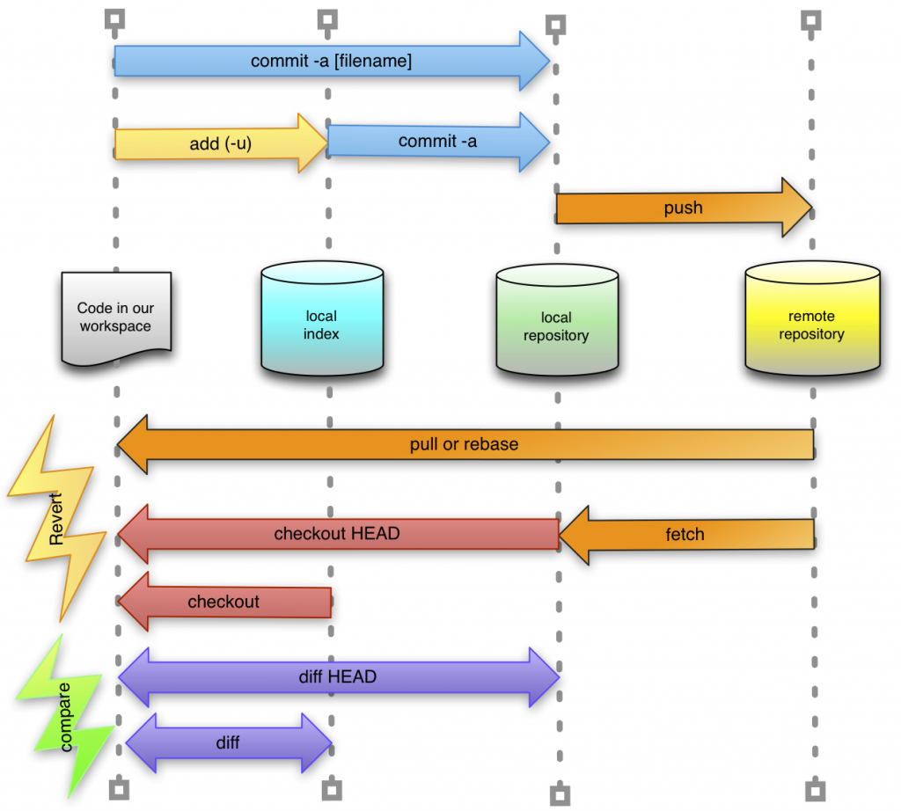

1. Go to Github.com and sign up 2. Install Git in your system 3. Create a New Repository on Github
(github > Repositories > New ) In Command Line : 4.git clone https://github.com/yogeshdarji99/Abc.git
( // paste the link from the page of your repository > Code tab (default tab) > "Clone or download" dropdown button ) 5. Add a folder to your respository 6.git status7.git add --a8.git config --global user.email yourname@yahoo.com
( // see your github profile for your email address) 9.git commit -m "Update the folder"10.git push
( // to push commits made on your local branch to a remote repository. it may prompt for your username and password)